Parallel &
Mixed Circuits
// Resistance · Voltage · Current · KCL
Parallel Circuits
- Components connect across the same two nodes
- Each branch receives the same voltage
- Current can split into multiple paths

Resistance in Parallel

Parallel resistors reduce total resistance.
Combine them into an equivalent resistor using the reciprocal formula:
Voltage in Parallel
- Voltage across every branch equals the source voltage
- All parallel components share the same potential difference
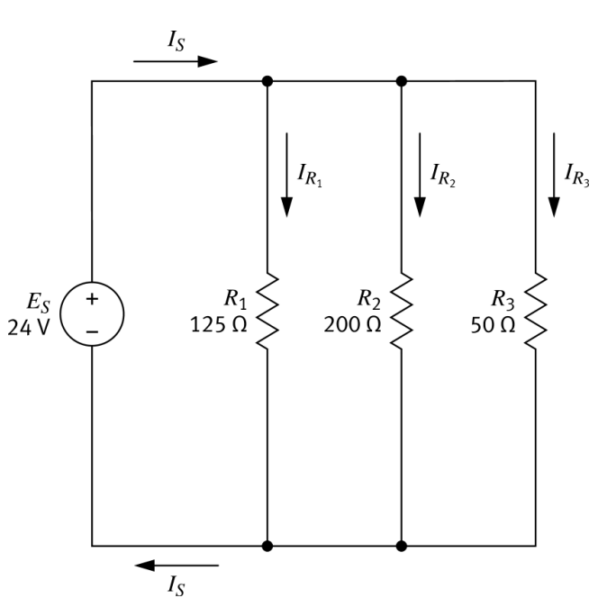
Current in Parallel
- Current divides between branches
- Branch current depends on resistance
- Lower resistance branch carries more current
Kirchhoff's Current Law
- Total current entering a junction equals total current leaving
- Total current = sum of branch currents
- Think of a fork in a river: water coming out equals water going in, even if one channel is narrower

Solving Branch Currents with Ohm’s Law
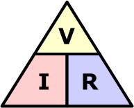
The same source voltage (24 V) applies to every branch. Use Ohm's Law to find each branch current.
From Given Circuit to Source Current
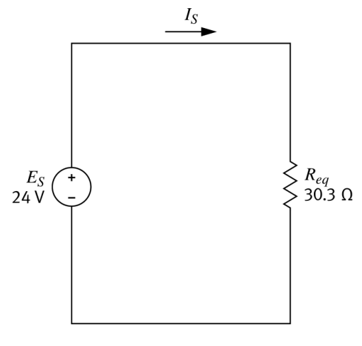
Total Current IS
To find the total source current, first simplify to find the equivalent resistance.
Calculate IS using Ohm’s Law and Req.
Mixed Circuits
- Contain both series and parallel connections
- Must be simplified step by step

Identify & Replace Series Resistors
R₂ and R₃ are in series.
Combine them:
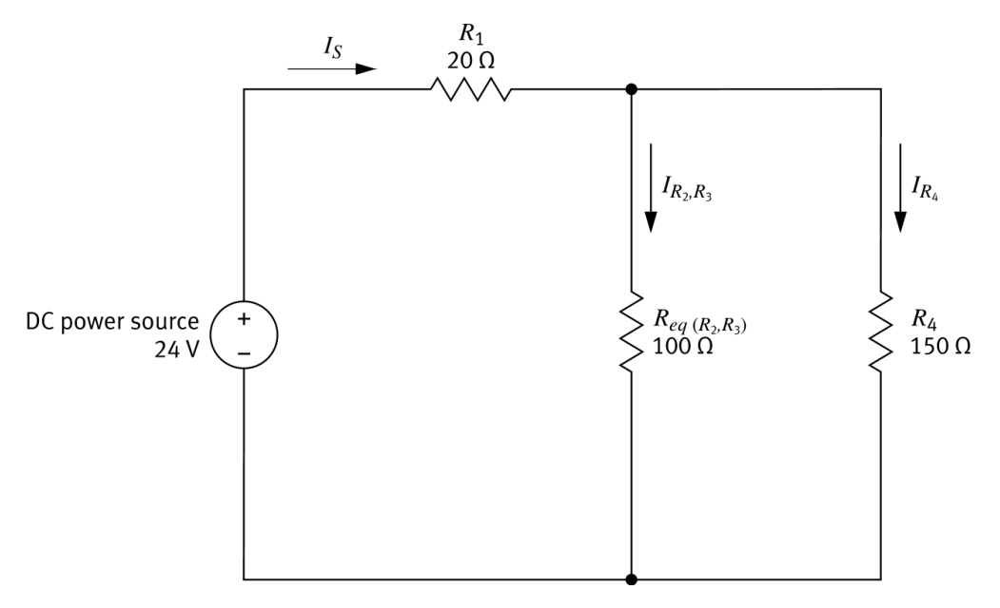
Identify & Replace Parallel Resistors
Req(R2,R3) = 100Ω and R₄ = 150Ω are in parallel.
Combine them:
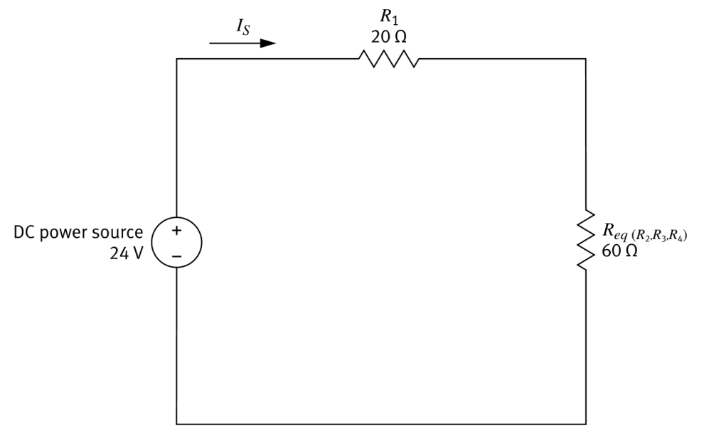
Continue Simplifying
R₁ and Req(R2,R3,R4) are in series.
Combine them:
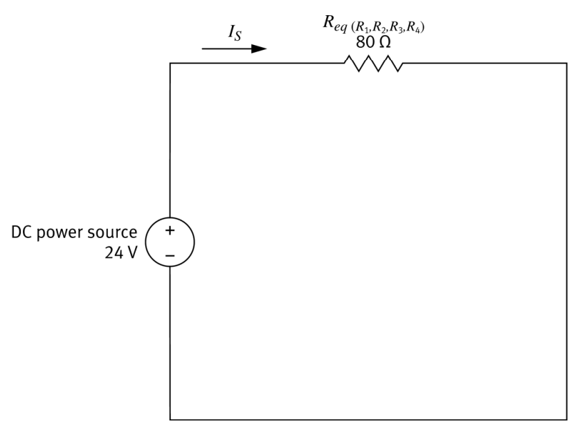
Now Work Backwards
Now that we have simplified the circuit, we can work backwards to find the parameters of all of the resistors in the original circuit.
- Start from the equivalent circuit to find total current.
- Use that current to recover branch voltages and currents.
- Continue step-by-step until each resistor value is accounted for.
Calculate Total Current IS
Once reduced to a single equivalent resistor, apply Ohm's Law directly.
IS = 0.30 A
Work Backwards — Voltage Drops
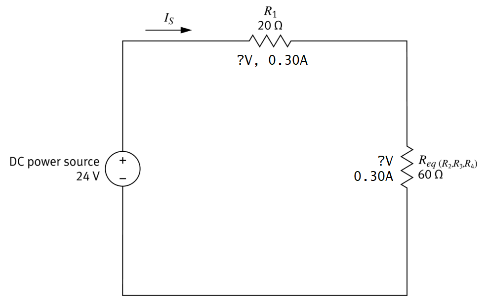
IS = 0.30A flows through both series components.
Find the voltage across each one.
Parallel Branch Currents
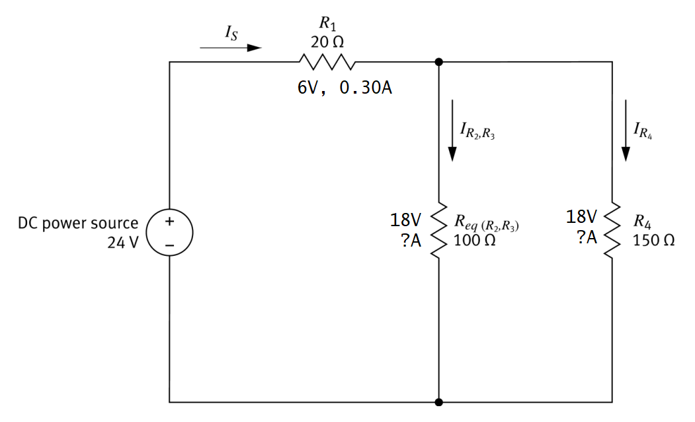
Voltage across the parallel section = 18V.
Both branches share this voltage.
Voltage Across R₂ and R₃
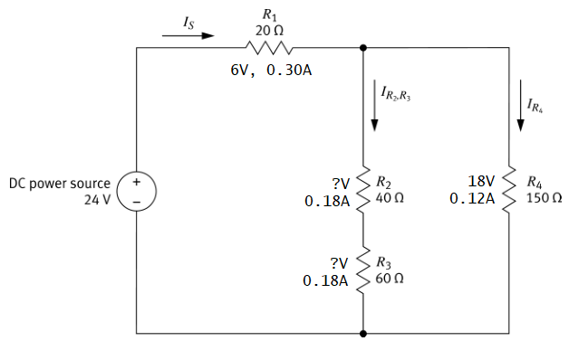
Current through the R₂–R₃ series branch = 0.18A.
Find voltage across each.
Example Complete
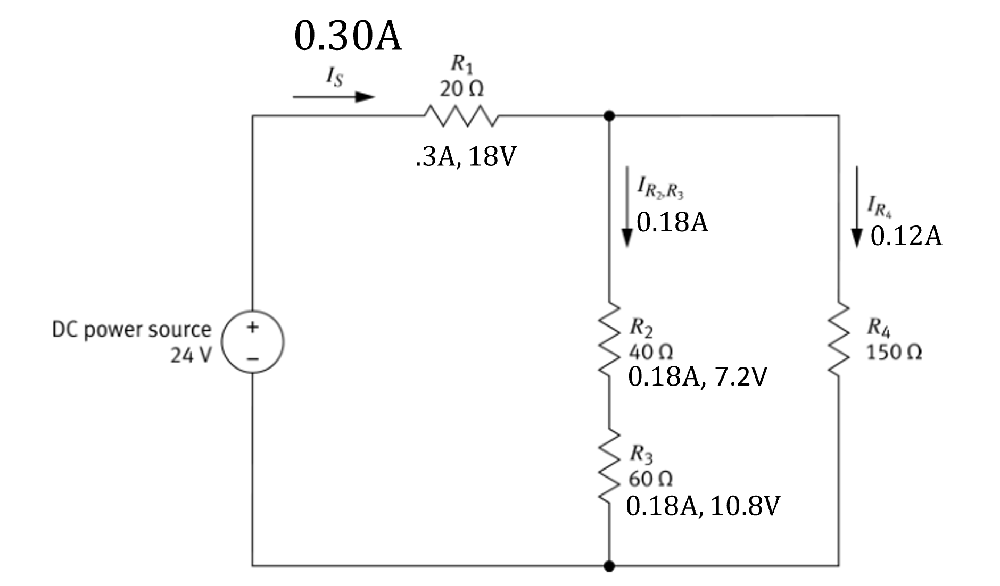
When you know all 3 parameters for each resistor, you are done.
Your Turn
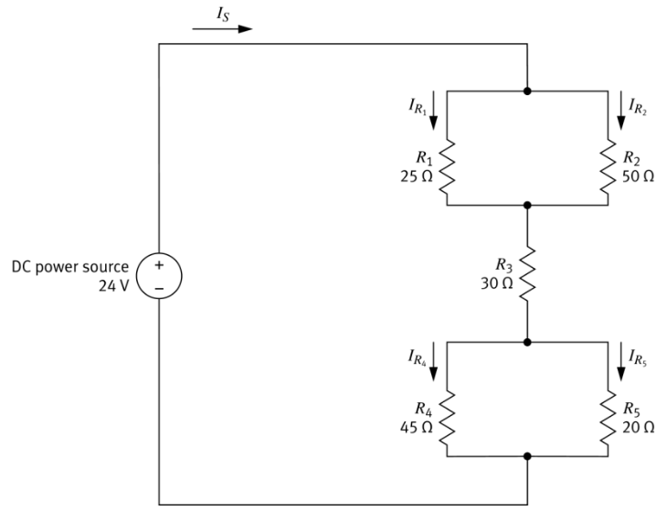
What steps would you take to solve this circuit?
Solve the Parallel Resistor Pairs
This circuit has two parallel sections. Use the reciprocal formula to find each equivalent resistance.
Parallel Formula
For any parallel combination, find the reciprocal of each resistance, sum them, then take the reciprocal of the result.
Parallel Pairs Simplified
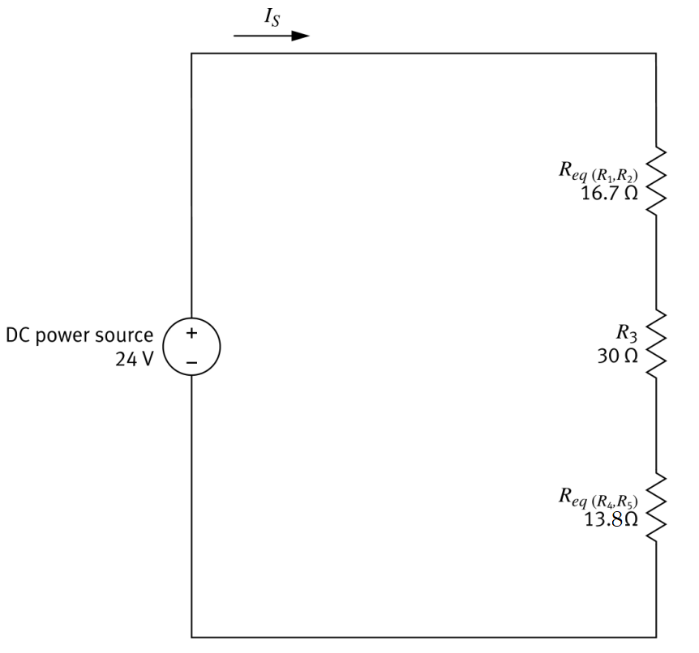
Simplify the Series Resistors
Three resistors remain in series. How do you find the total equivalent resistance?
Series Formula
For series resistors, simply add all values together.
Total Equivalent Resistance
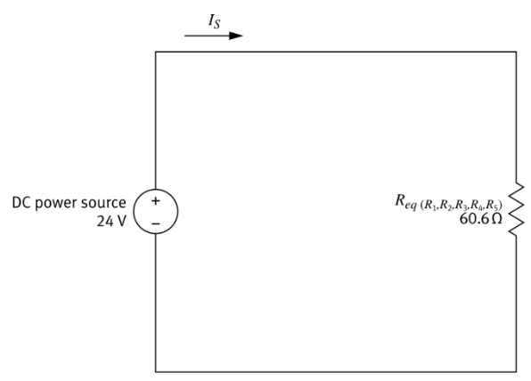
The entire circuit reduces to a single equivalent resistor.
Calculate Parameters in Reverse
Now work backwards through each simplification step to find voltage, current, and resistance at every resistor.
Total Source Current — Formula
We know the total voltage and total equivalent resistance. Use Ohm's Law to find the source current.
Total Source Current — Solution
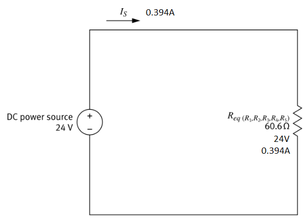
Substitute the known values.
Section Voltages — Formula
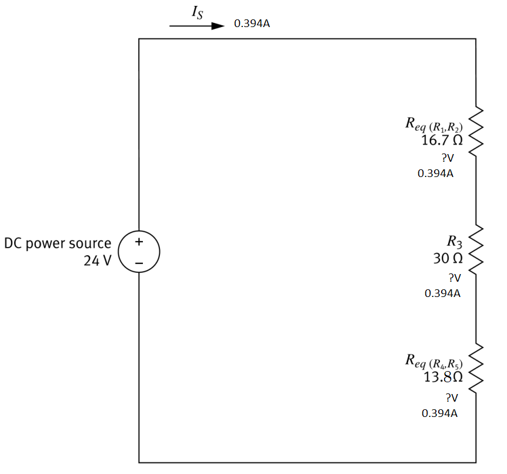
IS = 0.396 A flows through every series section. Use Ohm's Law to find the voltage drop across each.
Section Voltages — Solutions
Substitute IS = 0.396 A into V = I × R for each section.
Branch Currents — Formula
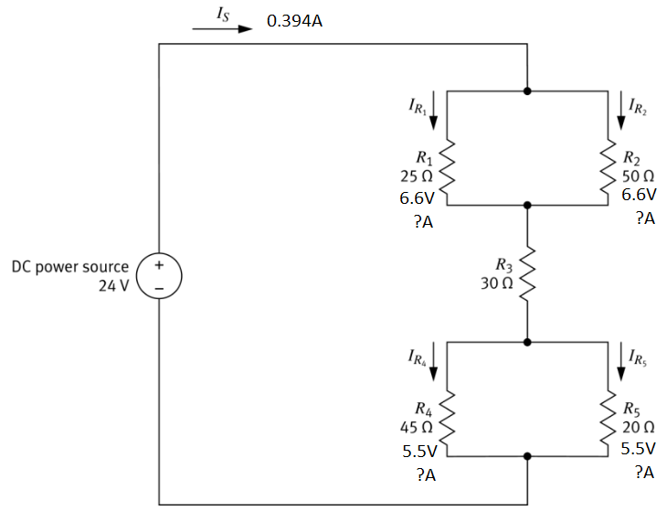
Each parallel section shares its section voltage. Use Ohm's Law to find the current through each individual branch.
Branch Currents — Solutions
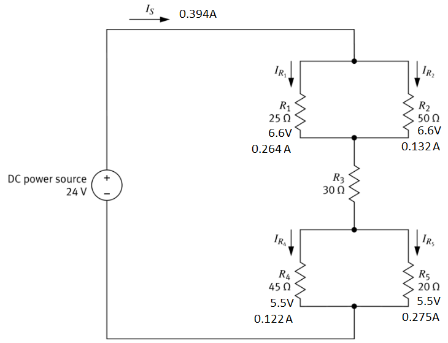
Substitute each section voltage and branch resistance.
Example Complete
Once all resistors have all 3 parameters, you are done.
Why Do We Simplify Circuits?
When a circuit has many components, it can be complicated to analyze directly. By replacing groups of resistors with their equivalent resistance, we simplify the circuit into something we can easily analyze with Ohm's Law.
Once we know the total current and voltage, we can work back through the circuit to determine what is happening at every component.
- Predict current and voltage in each part of a circuit
- Design circuits that operate safely without overheating components
- Verify a circuit is working correctly by comparing measured values to calculated ones
- Troubleshoot electrical systems by identifying when currents or voltages are not what they should be
Real Systems
In real systems like cars, appliances, and electronic devices, circuits are rarely simple.
They usually contain many series and parallel components, and the only practical way to understand them is to simplify and analyze them step by step.